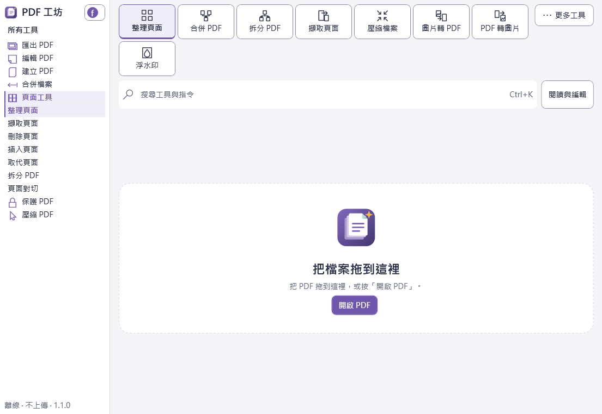

Windows 桌面工具
PDF 工坊
離線 PDF 小工具，整理頁面、合併、拆分、浮水印、圖片與 PDF 互轉、加解密等 17 項功能， 檔案全程只在你的電腦上處理，輸出一律另存新檔，不會覆蓋原檔。

下載
尚未申請程式碼簽章，下載後瀏覽器與 Windows 可能花幾十秒掃描，第一次執行也可能出現「Windows 已保護您的電腦」， 請點「其他資訊」→「仍要執行」。若不想等待掃描，也可以改用免安裝版。需求：Windows 10 1809 以上。
正在載入最新版本的下載連結…
找不到你需要的版本，或想看歷史版本？ 前往 GitHub Releases 完整頁面
下載完整性驗證（SHA-256）
下載完成後，建議用以下指令核對雜湊值，確認檔案在傳輸過程中沒有被竄改或損毀：
certutil -hashfile 檔案路徑 SHA256
正在載入雜湊值…
版本更新說明
正在載入更新說明…